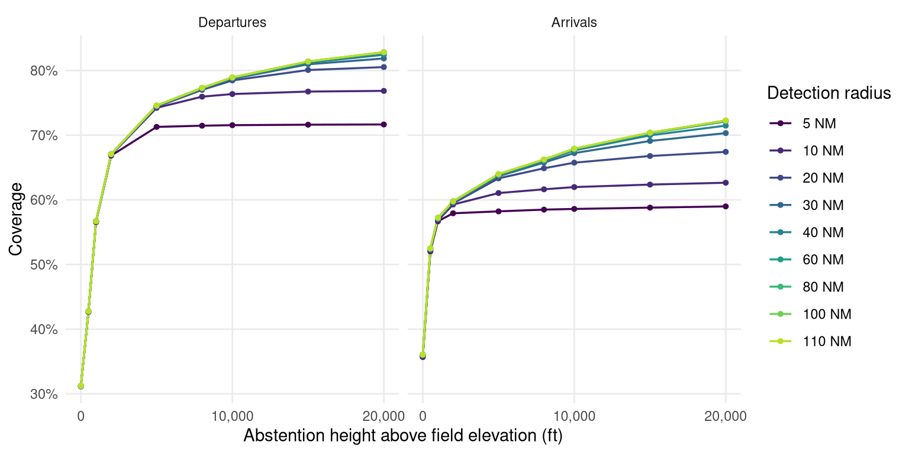
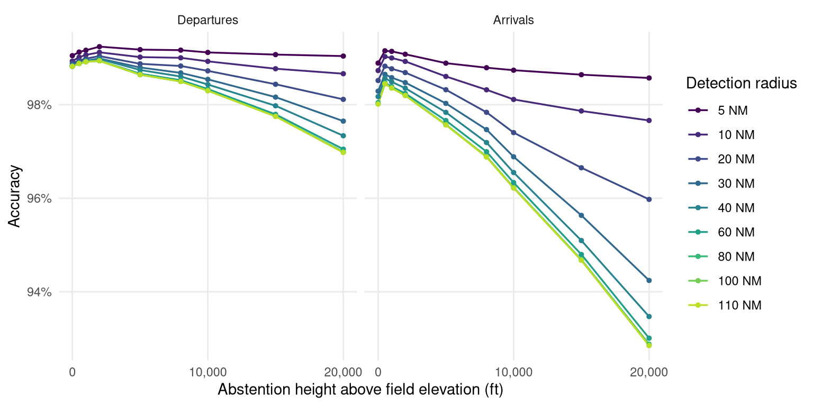

| Method | Coverage | Accuracy | Overall correctness |
|---|---|---|---|
| Cautious | 40.00% | 99.00% | 39.60% |
| Eager | 95.00% | 88.00% | 83.60% |
Detecting departure and destination aerodromes from ADS-B
Version 4.1 — detection inside the pipeline
Summary
Versions 1–3 of this study ran outside the OPDI pipeline. They reimplemented aerodrome proximity with their own coordinate grid, which made every recommendation awkward to adopt: the findings were expressed in nautical miles while production ranks by H3 cell membership, so acting on them meant re-deriving rather than transcribing.
Version 4 moves detection into the pipeline. Three modes now share one candidate-detection stage — H3 as the index, exact great-circle distance as the comparison — and are selected by a mode parameter on the production function. The pipeline ran end to end on three days of 2025-06, producing a real flight list scored against Network Manager ground truth.
Three results:
Endpoint abstention buys +12.47 pp of departure coverage for -0.84 pp of accuracy. A real trade, not a free win — and a different conclusion from version 3, for a reason worth stating up front.
The detection radius barely matters; the height threshold is everything. Extending the radius from 40 NM to 110 NM changes departure coverage by +0.20 pp. Raising the height cut-off from on-ground-only to unrestricted changes it by more than fifty points. A distance cap costs almost nothing, which is worth knowing because it is the parameter most likely to be tuned.
Preferring aerodromes with scheduled service is close to free. Ranking candidates on a distance penalised for aerodromes without scheduled service gains +0.67 pp of departure accuracy and +1.24 pp of arrival accuracy, at no measurable cost in coverage.
ImportantThe production baseline improved too
Version 3 concluded that endpoint abstention beat production on both coverage and accuracy. That no longer holds, and the reason is not that abstention got worse — it is that the baseline got better. Running the altitude-trend algorithm on H3 candidates with exact distances lifts its departure accuracy from 97.45% in version 3 to 98.82% here.
The comparison in this version is therefore harder and fairer than the one before it. Version 3’s numbers are not comparable to these and remain published unchanged.
NoteWhat changed in 4.1
No new computation — 4.1 reports more of the same sweep. Every headline number is unchanged.
- Results are now given for both roles on all four measures: arrival overall correctness and both in-area figures were computed but not printed.
- The sweep is plotted on accuracy as well as coverage, for departures and arrivals. This is the substantive addition: accuracy peaks near the ground and falls as height is admitted, so the coverage view alone overstates the case for a high threshold (Section 5.1).
- The per-aerodrome cross-check names the mode and parameters it was produced at, extends to the 30 busiest aerodromes, and separates the out-of-area bucket from the movement-count ratio it was distorting.
- Figure captions are generated from the data rather than written by hand.
1 What the pipeline does before any method runs
The population a method is judged on is fixed long before the method executes. Each stage below discards something, and what survives is what detection sees.
1. Ingest (ingestion/osn_statevectors.py). Hourly partitions are read from the OpenSky archive and immediately filtered to the European bounding box (-25.87, 26.75, 49.66, 70.26) and decimated to one sample every 5 s. Both filters are applied before anything is written. For the three days here that turned roughly 60 GB of raw feed into 142,630,930 state vectors.
What is discarded: everything outside Europe, and four samples in five. The 5 s decimation is the reason a track’s “first sample” can be several seconds into the take-off roll rather than at the stand.
2. Track construction (pipeline/tracks.py). State vectors are grouped into tracks by SHA2(icao24 ‖ callsign) and split on a gap of over 30 minutes, or over 15 minutes below 5,000 ft. Each sample is also indexed into H3 cells at resolutions 7 and 12.
What is discarded: nothing, but the grouping decides what counts as one flight. Version 2 measured the consequences — roughly one matched flight in ten is split across more than one track, and a few percent of tracks cover more than one flight.
3. Aerodrome zones (reference/h3_airport_zones.py). Each aerodrome is surrounded by concentric rings of H3 res-7 cells: 5 NM steps out to 40 NM, then 10 NM steps to 110 NM. Every cell carries the ring band it belongs to, so a consumer chooses its own radius at read time. 33,751,619 (aerodrome, cell) rows for the 1,353 large and medium aerodromes in the area.
Why it reaches 110 NM: the same table serves ASMA ring crossings at 40 and 100 NM. Detection uses a fraction of it.
4. Endpoint candidates (pipeline/flights.py). For each track, the first and last sample are matched against the zone table on h3_res_7, and the exact great-circle distance to each candidate aerodrome is computed. The result is cached as opdi_endpoint_candidates — 7,491,655 rows.
This is the step that makes the sweeps in this paper affordable. Deriving candidates from state vectors is expensive; once cached, changing a threshold is a filter and a re-rank over a few million rows rather than a pass over 142 million. Reducing to the two endpoint samples before the join is also what makes the full 110 NM reach cheap — about a million rows to match, not the whole month.
NoteH3 as an index, distance as the comparison
The H3 join answers “which aerodromes are plausibly near this sample” in one equi-join, without a spatial cross product. It does not answer “how near”, because a cell inside a 40 NM ring can still be more than 40 NM from the aerodrome. So every candidate is then measured exactly, and the distance — not the cell — decides.
2 How the metrics work
This study turns on the difference between measures that are easy to conflate, so each is defined before any number appears.
Let \(G\) be the ground-truth flights and \(A \subseteq G\) those the method answered.
| Measure | Definition | The question it answers |
|---|---|---|
| Coverage | \(\lvert A \rvert / \lvert G \rvert\) | How often does it say something? |
| Accuracy | \(\lvert \text{correct} \rvert / \lvert A \rvert\) | When it speaks, how often is it right? |
| Overall correctness | \(\lvert \text{correct} \rvert / \lvert G \rvert\) | Of everything, how much did it get right? |
A flight whose trajectory was never seen counts against coverage. That is deliberate: ground truth is the denominator throughout, so “we had no data” is a miss rather than an excluded row.
Accuracy alone is close to meaningless here. It says nothing about how often a method speaks, so a method that answers rarely and cautiously can post a better accuracy than one doing far more useful work. Consider two methods on the same flights:
Neither is simply better — they suit different uses. A flight list that downstream users treat as authoritative may well prefer the cautious one. The point is that no single number decides it, which is why all three are reported throughout.
2.1 Precision and recall, for out-of-area
Some flights have an origin or destination outside the observed area entirely. “Out of area” is therefore a legitimate answer, not a failure — and how well a method identifies those cases is measured with the standard pair:
| Measure | Definition | The question it answers |
|---|---|---|
| Precision | of flights labelled out-of-area, the fraction that were | When it says out-of-area, is it right? |
| Recall | of flights that were out-of-area, the fraction it labelled | Of the cases out there, how many did it catch? |
Precision is accuracy computed on one label instead of all of them. Recall has no counterpart in the table above, and it is the one that matters here: high precision with low recall means a method is right when it fires but rarely fires.
In the standard confusion-matrix vocabulary, with “out-of-area” as the positive class: precision is \(TP/(TP+FP)\) and recall is \(TP/(TP+FN)\). Coverage has no confusion-matrix equivalent, because it measures whether the method produced any label rather than which one.
2.2 In-area coverage and accuracy
Because roughly one flight in twelve is genuinely out of area, a method could raise its apparent accuracy simply by labelling out-of-area liberally. So the same two measures are also reported restricted to flights whose truth is a real aerodrome — detection skill with the free wins removed. When headline and in-area figures diverge, the gap is exactly the contribution of out-of-area labelling.
3 The three modes
All three read the same cached candidates. They differ in what evidence they consult and, more importantly, in when they are willing to stay silent.
3.1 trend — the current production algorithm
Evidence: every state vector below FL40 that falls inside an aerodrome’s detection zone, currently 30 NM.
Rule: for each (track, aerodrome) pair, smooth altitude over a 5-sample window, count how often the smoothed value rises versus falls, and require a margin of 4 either way. A positive margin is a take-off, negative a landing.
Abstains when: the margin is within ±4 — classified ambiguous and the flight is dropped entirely.
Failure mode: a flight seen only above FL40 near its origin, or with a noisy altitude trace, silently loses its aerodrome. The FL40 gate is the binding constraint, not the 30 NM radius.
3.2 nearest — the traffic library’s rule
Evidence: the track’s first and last sample. Nothing else — no altitude, no ground state, no trend.
Rule: name the nearest aerodrome by effective distance.
Abstains when: never, except when no candidate exists at all.
Failure mode: it answers just as confidently for a track that begins in the cruise as for one that begins at a stand. Its coverage is the highest of any method and its accuracy the lowest, and both facts have the same cause.
3.3 endpoint — nearest, with abstention
Evidence: the same two samples, plus their height above field elevation and their on_ground flag.
Rule: name the nearest aerodrome, but only if the endpoint is within radius_nm and either below height_ft above that aerodrome’s elevation or flagged on the ground. Otherwise, if the endpoint lies near the boundary of the observed area, answer out-of-area. Otherwise answer nothing.
Why height above field elevation: a fixed altitude cut-off means nothing at an aerodrome sitting at 5,000 ft. Elevation comes from OurAirports and is missing for about 3% of large and medium aerodromes; where it is missing the height test is skipped and only the ground flag can satisfy the rule, rather than silently comparing against sea level.
Failure mode: it inherits nearest’s naming and therefore its confusions between neighbouring aerodromes; the abstention only decides whether to answer, never what to answer.
4 Results
| Movements | Mode | Coverage | Accuracy | Overall | In-area cov | In-area acc |
|---|---|---|---|---|---|---|
| departures | trend | 68.72% | 98.82% | 67.91% | 74.84% | 98.95% |
| departures | nearest | 91.68% | 87.78% | 80.48% | 96.26% | 91.17% |
| departures | endpoint | 81.20% | 97.98% | 79.55% | 87.43% | 98.41% |
| arrivals | trend | 68.06% | 97.87% | 66.61% | 74.23% | 97.94% |
| arrivals | nearest | 88.56% | 79.41% | 70.33% | 91.15% | 84.20% |
| arrivals | endpoint | 69.97% | 95.10% | 66.54% | 75.89% | 95.45% |
endpoint sits between the two by construction, and that is the whole design: it keeps nearest’s naming rule and adds trend’s willingness to stay silent. It answers +12.47 pp more departures than production for -0.84 pp of accuracy.
Whether that trade is worth taking is a policy question rather than a technical one. A flight list treated as authoritative may prefer production’s caution; an analysis needing volume may not.
Arrivals remain weaker than departures on every measure, as in all previous versions. A departure’s first sample is at or near a stand, with the aircraft stationary shortly before. An arrival’s last sample is more often a loss of reception during descent than a landing, and can be anywhere on the approach.
5 What a distance cap costs
The sweep varies the detection radius and the abstention height independently, 90 combinations in all, over the cached candidates.
Both measures are plotted for both roles, because the two axes do not merely differ in strength — they pull in opposite directions, and a coverage-only view hides that entirely.


| Max radius | ADEP cov | ADEP acc | ADES cov | ADES acc |
|---|---|---|---|---|
| 5 NM | 71.62% | 99.07% | 58.79% | 98.64% |
| 10 NM | 76.74% | 98.77% | 62.36% | 97.87% |
| 20 NM | 80.07% | 98.44% | 66.78% | 96.65% |
| 30 NM | 80.96% | 98.16% | 69.10% | 95.63% |
| 40 NM | 81.20% | 97.98% | 69.97% | 95.10% |
| 60 NM | 81.36% | 97.79% | 70.29% | 94.80% |
| 80 NM | 81.39% | 97.75% | 70.38% | 94.69% |
| 100 NM | 81.40% | 97.75% | 70.38% | 94.67% |
| 110 NM | 81.40% | 97.75% | 70.38% | 94.67% |
A cap costs almost nothing. Going from 40 NM to the full 110 NM reach changes departure coverage by +0.20 pp and accuracy by -0.23 pp. The useful range is 20–40 NM; below that coverage falls away quickly, above it nothing happens.
Every radius at or above 20 NM traces effectively the same coverage curve: at 5,000 ft they span 74.39% to 74.58%, about a point across a five-fold change. Only the 5 NM and 10 NM lines fall away, and they fall further as the height threshold rises, because a tight radius costs more once more of the sky is admitted.
Height is the parameter that matters. At 40 NM, departure coverage runs from 31.21% with the on-ground-only rule, through 67.05% at 2,000 ft, to 81.20% at 15,000 ft. That is over fifty points from one axis against a fraction of a point from the other.
Arrivals behave the same way with less room: from 36.01% to 69.97% over the same range. They also saturate later in radius — at 15,000 ft a 20 NM cap costs departures +1.32 pp of coverage but arrivals +3.61 pp, because an arrival’s last recorded sample is further from the aerodrome than a departure’s first.
Two endpoints of the sweep serve as sanity checks, and both behave as they should: at height 0 the rule reduces to “endpoint on the ground” and gives 31.21%, close to what a surface-samples-only method achieved in earlier versions; with height unrestricted and a wide radius it reaches 91.41%, close to nearest’s 91.68%, which is what it should converge to.
5.1 What the coverage view hides
Read on accuracy, the same grid tells a different story, and the two together are what actually determines an operating point.
Accuracy peaks near the ground, then declines. At 40 NM, departure accuracy is highest at 2,000 ft (98.98%) and arrival accuracy at 500 ft (98.57%). By 15,000 ft they have given up -1.00 pp and -3.47 pp respectively. Every foot of extra height admits endpoints that are further into the climb or descent, and those are exactly the endpoints most likely to sit nearer a neighbouring aerodrome than the real one.
Arrivals pay roughly three times as much for the same height. That ratio is the single clearest statement of why this study has never recommended changing the arrivals algorithm: the same parameter that is nearly free for departures is expensive for arrivals, so one operating point cannot serve both well.
The radius matters for accuracy even where it does not for coverage. Above 40 NM a wider radius buys essentially no coverage, but it keeps costing accuracy: at 15,000 ft, going from 5 NM to 110 NM costs -1.32 pp of departure accuracy and -3.97 pp of arrival accuracy. This is the real argument for a cap. Version 4 justified one on the grounds that it costs almost no coverage; the accuracy view shows it is mildly positive rather than merely harmless.
Overall correctness is what reconciles them. Coverage rises steeply with height and accuracy falls gently, so their product keeps rising for departures across the whole range — which is why 79.55% at 15,000 ft beats 66.36% at 2,000 ft despite the lower accuracy. A user who cares about a trustworthy label rather than a complete one should read the accuracy panel and pick a much lower height than the one recommended here.
6 Preferring aerodromes with scheduled service
Version 3 found that the most frequent departure errors formed one pattern: a scheduled civil airport losing to an adjacent military airfield — Izmir to Çiğli Airbase, Naples to Grazzanise, Cagliari to Decimomannu, Catania to Sigonella, Gdańsk to Cewice, all between 7 and 25 NM apart.
The mechanism is straightforward. With 5 s sampling a departing aircraft’s first recorded fix is already into the climb and displaced along the departure track. Where a military field lies between the airport and that track, it is genuinely the nearest aerodrome — the rule is not malfunctioning, it is answering the question it was asked.
Aviation knowledge resolves it without new data: a commercial flight almost certainly used the aerodrome with scheduled service. Candidates are therefore ranked on effective distance — true distance plus a fixed penalty for aerodromes without scheduled service — so a military field must be clearly nearest rather than merely nearest.
| Penalty | ADEP cov | ADEP acc | ADES cov | ADES acc |
|---|---|---|---|---|
| 0 NM | 81.20% | 97.31% | 70.00% | 93.85% |
| 5 NM | 81.20% | 97.72% | 69.99% | 94.31% |
| 10 NM | 81.20% | 97.98% | 69.97% | 95.10% |
| 15 NM | 81.19% | 97.90% | 69.92% | 94.88% |
| 20 NM | 81.20% | 97.68% | 69.91% | 94.80% |
| 30 NM | 81.19% | 97.59% | 69.82% | 94.84% |
The gain is +0.67 pp of departure accuracy and +1.24 pp of arrival accuracy, for a coverage change of -0.01 pp.
Two features make this trustworthy rather than a lucky constant. The control at penalty 0 reproduces the unbiased ranking, so the effect is attributable. And the curve peaks and turns — accuracy is best around 10 NM and declines above it. A penalty that merely favoured larger aerodromes would improve monotonically; one that corrects a specific bias should overshoot, and this does.
WarningIt is not free — the cost is a mirror error
Version 3 measured what this preference breaks: genuine movements at non-scheduled aerodromes get pulled to the nearby hub — Biggin Hill to London City, Northolt to Heathrow. In that analysis the mirror error became the largest single class of remaining departure error, at roughly 59% of them.
The net is favourable, and the accuracy figures above include the cost. But a flight list built this way will systematically under-report movements at non-scheduled aerodromes, and anyone analysing general aviation or military traffic should know that before using it.
7 Out-of-area
A flight from Dubai to Amsterdam has a departure aerodrome that no European ADS-B feed can name: the aircraft entered the observed area already airborne. Scoring that as a detection failure understates every method. Treating “out of area” as an answer is an accounting correction, not a detection improvement.
7.1 How it is derived
On the ground-truth side, an aerodrome is relabelled OOA when its coordinates fall outside the ingestion bounding box, or when its ICAO code does not resolve in OurAirports. The unresolvable codes are overwhelmingly non-European, and a code that cannot be located is one no trajectory endpoint could have been matched to. This is what puts prediction and truth in the same alphabet.
On the prediction side, an endpoint within 30 NM of the bounding box edge is labelled out-of-area. The longitude margin is scaled by \(1/\cos(\text{lat})\): a degree of longitude shrinks toward the pole, so an unscaled margin would be roughly twice as strict in northern Norway as in the Canaries.
Precedence is aerodrome first, border second. The opposite order looks equivalent and is not — version 3 found Ponta Delgada, which sits about 8 NM inside the western edge, having its departures labelled out-of-area with the aircraft still on the runway. Being near the boundary means “out of area” only when there is nothing better to say.
The border test carries no height condition. A flight leaving the observed area is at cruise level by definition, so any height cut-off would reject exactly the endpoints the branch exists to catch.
7.2 What it does to the numbers
| Mode | truly OOA | labelled OOA | OOA recall | OOA precision | headline acc | in-area acc |
|---|---|---|---|---|---|---|
| trend | 8.30% | 0.00% | 0.00% | 0.00% | 98.82% | 98.95% |
| nearest | 8.30% | 0.00% | 0.00% | 0.00% | 87.78% | 91.17% |
| endpoint | 8.30% | 0.74% | 7.94% | 89.44% | 97.98% | 98.41% |
truly OOA is a property of the sample, not of the method, so it must be identical across all three rows — that it is confirms the decomposition is being computed correctly rather than being a per-method artefact.
The gap between headline and in-area accuracy shows how much out-of-area labelling contributes. It is small here, which is the honest reading: the mechanism is right but the geometric test catches only part of what is there. Version 3 measured this directly at 92–94% precision against 10–15% recall — when the rule fires it is almost always correct, but it rarely fires. An inbound flight’s first recorded sample appears wherever a receiver happens to catch it, which is usually well inside the boundary rather than at it.
The concept is right and the instrument is wrong. A phase-based test would fit the physics better: a track whose first sample is already in the cruise, neither near an aerodrome nor descending toward one, has an origin outside the observed area regardless of where it sits. That is the clearest single improvement available and is not implemented here.
8 Cross-check against the reference
Flight-level accuracy can hide errors that cancel: a departure misattributed from A to B leaves both counts wrong and the total right. Movement counts per aerodrome are what an operational user reads, so they are checked separately.
| Movements | Aerodromes | Count ratio | Excl. OOA | Median recall | Median recall, 50+ movements |
|---|---|---|---|---|---|
| departures | 824 | 0.810 | 0.875 | 80.00% | 97.35% |
| arrivals | 805 | 0.695 | 0.756 | 60.00% | 84.08% |
| Aerodrome | NM departures | OPDI assigned | Count ratio | Recall |
|---|---|---|---|---|
| LTFM | 2,282 | 2,211 | 0.97 | 96.49% |
| EHAM | 2,148 | 2,165 | 1.01 | 99.77% |
| EDDF | 2,094 | 2,087 | 1.00 | 99.43% |
| LFPG | 2,084 | 2,071 | 0.99 | 98.85% |
| EGLL | 2,001 | 2,024 | 1.01 | 99.35% |
| LEMD | 1,773 | 1,761 | 0.99 | 99.21% |
| LEBL | 1,591 | 1,582 | 0.99 | 99.25% |
| EDDM | 1,573 | 1,567 | 1.00 | 99.43% |
| LIRF | 1,449 | 1,445 | 1.00 | 99.65% |
| LTAI | 1,435 | 1,387 | 0.97 | 96.17% |
| LEPA | 1,417 | 1,401 | 0.99 | 98.80% |
| LGAV | 1,306 | 1,280 | 0.98 | 95.94% |
| EGKK | 1,223 | 1,218 | 1.00 | 99.43% |
| EIDW | 1,185 | 1,166 | 0.98 | 98.14% |
| LSZH | 1,178 | 1,168 | 0.99 | 98.81% |
| LOWW | 1,156 | 1,142 | 0.99 | 98.10% |
| EKCH | 1,140 | 1,133 | 0.99 | 99.30% |
| LTFJ | 1,137 | 1,115 | 0.98 | 96.83% |
| LPPT | 1,010 | 1,001 | 0.99 | 99.11% |
| LFPO | 992 | 990 | 1.00 | 98.99% |
| LIMC | 973 | 964 | 0.99 | 98.56% |
| ENGM | 932 | 927 | 0.99 | 98.93% |
| EGCC | 926 | 902 | 0.97 | 97.41% |
| EGSS | 885 | 883 | 1.00 | 99.66% |
| EPWA | 875 | 874 | 1.00 | 99.43% |
| EBBR | 872 | 886 | 1.02 | 99.66% |
| EDDB | 870 | 864 | 0.99 | 97.70% |
| LEMG | 850 | 849 | 1.00 | 99.65% |
| ESSA | 820 | 791 | 0.96 | 95.98% |
| EDDL | 758 | 750 | 0.99 | 98.15% |
The error is an undercount rather than an overcount, which is the correctable direction: a systematic shortfall can be adjusted for, an inflated count cannot. Roughly six points of it are the out-of-area bucket rather than per-aerodrome detection failure — flights the method never labelled land nowhere, so they show up as missing movements at whichever aerodrome the truth names.
Recall also scales sharply with aerodrome size. Across the busiest thirty it runs from 95.94% to 99.77%, against a median of 80.00% over all 824 aerodromes with departures in the sample. The flight list is therefore substantially more complete at large aerodromes than small ones, which matters before comparing across aerodrome classes.
9 Recommendation
Adopt endpoint for departures if coverage matters more than the last point of accuracy. It adds +12.47 pp of coverage for -0.84 pp, and it is a smaller algorithm than the one it replaces — no smoothing window, no margin parameter, no per-aerodrome vote. If accuracy is paramount, keep trend; it is genuinely the more accurate rule now.
Use 20–40 NM and a scheduled-service penalty of 10 NM. Both are on plateaus, so neither is delicate.
Do not change the arrivals algorithm on this evidence. Arrivals are weaker on every measure and every version of this study has found the same.
Publish the provenance column. adep_source / ades_source distinguish “named an aerodrome”, “outside the observed area” and “could not determine”. Today all three are a single null in the published flight list, and they mean entirely different things to a consumer. This is the highest-value change per line of code in the whole study.
10 Limitations
- Three days, one sample. Versions 2 and 3 used two samples a year apart; this version re-runs the whole pipeline, which is expensive, so it uses one. The mode ranking is robust across earlier versions, but the exact figures here have not been validated on a second period.
- Out-of-area recall is low. The geometric border test is the wrong instrument; the phase-based test in Section 7 is the successor.
- The scheduled-service preference has a cost that these accuracy figures include but do not itemise: movements at non-scheduled aerodromes are pulled to nearby hubs.
- The sweep re-implements the endpoint rule as a DataFrame operation instead of calling the pipeline’s
classify_endpoints, because a sweep cell needs only(track_id, adep, ades)while the pipeline method builds a whole flight list. The headlineendpointrow does come from the pipeline path, so a divergence between the two would surface as the sweep disagreeing with its own mode — but this is a duplication and worth removing. track_idis taken as given, with the fragmentation and merging rates version 2 measured.
11 Reproducing
Reference zones, state vectors and tracks, in the opdi repository:
RANGE="--env opensky --start 2025-06-05 --end 2025-06-08"
opdi run $RANGE --step 00a # zones: 5 NM bands to 110 NM
opdi run $RANGE --step 01 # state vectors, bbox and 5 s applied at ingest
opdi run $RANGE --step 02 # tracks, with H3 res 7 and 12Candidates once, then a flight list per mode:
from datetime import date
from opdi.pipeline.flights import FlightListProcessor
fp = FlightListProcessor(spark, config)
fp.build_endpoint_candidates(date(2025, 6, 1))
for mode in ("trend", "nearest", "endpoint"):
fp.process_dai(date(2025, 6, 1), mode=mode, skip_if_processed=False,
abstention_radius_nm=40, abstention_height_ft=15000,
sched_penalty_nm=10,
table_name=f"research/flight_list_{mode}",
write_mode="overwrite")Scoring and both sweeps. This runs locally: the inputs are small once the candidates are cached, and the cluster namespace is shared.
python benchmarks/benchmark_modes.py --months 202506 \
--days 2025-06-05 2025-06-06 2025-06-07 --local --results-dir <dir>Rendering this page needs no credentials, no database and no cluster.